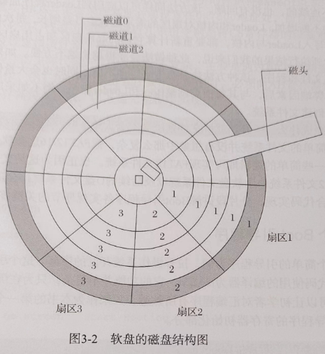
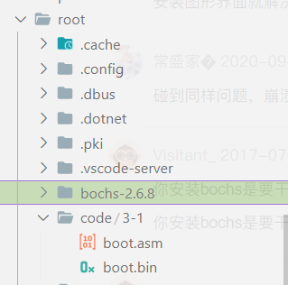

1. 操作系统概述
1.1 什么是操作系统
发展史：单任务系统、批处理系统、分时操作系统、实时操作系统、嵌入式操作系统、云系统……
1.2 操作系统的组成结构
操作系统分为内核层和应用层
- 内核层: 引导启动、内存管理、异常/中断处理、进程管理、设备驱动、文件系统等模块组成
- 应用层：系统 API 库和应用程序
内核层主要负责控制硬件设备、分配系统资源、为应用程序提供健全接口支持、保证应用程序正常稳定运行等全局性工作
应用层主要负责人机交互工作
引导启动
计算机从 BIOS 上电自检后到跳转至内核程序执行前这一期间执行的一段或几段程序。这些程序主要用于检测计算机硬件，并配置内核运行时所需的参数，如何再把检测信息和参数提交给内核解析，内核会在解析数据的同时对自身进行配置。
引导程序只负责启动内核，而非真正属于内核，内核开始执行后，引导程序就没用了
引导程序曾经分为两部分：Boot 和 Loader，现在一般合起来，叫 BootLoader
流行的引导启动程序有 Grub 和 Uboot，自带命令行可以进行交互，更好地控制内核加载
内存管理
是内核的基础功能，主要作用是有效管理物理内存，而且可以简化其他模块开辟内存空间（连续或非连续的）的过程，为页表映射和地址变换提供配套函数。
linux 内存管理单元的伙伴算法，是一种比较稳定成熟的内存管理算法，可以长时间保持内存的稳定分配，防止内存碎片过多。
还有内存线性地址空间的红黑树管理算法，它将原有的线性地址结构转换为树状结构以缩短搜索时间，同时在每次插入新节点时调整树的高度或深度，来维持树的形状进而保证搜索时间的相对稳定，兼顾搜索时间损耗又兼顾插入时间损耗，所以 linux 选择红黑树这种近似平衡树来代替之前的 AVL 树（绝对平衡树）
异常/中断处理
异常指的是执行程序时产生的错误或问题，比如除零、段溢出、页错误、无效指令、调试错误等。
中断处理是指处理器接收到硬件设备发来的中断请求信号并作出相应的处理操作。这部分和外围硬件设备关系密切，会影响操作系统整体的执行速度。
中断处理通常分为中断上半部和中断下半部。中断上半部要求快速响应中断，在取得必要数据和信息后尽早开启中断，以使处理器能够再次接收中断请求信号。中断下半部被用来执行剩余中断内容，数据解析、驱动程序状态调整等更耗时的内容均在这里完成。为了让更紧迫的进程优先执行，中断下半部还可以将处理内容放进一个进程中，让更高优先级的进程快速执行
进程管理
程序是在文件系统里存放的二进制代码，属于静止状态。一旦加载到操作系统内运行，就变成了进程。进程是程序的运行状态，拥有比程序更多的管理层面的信息和数据。
进程管理涉及进程调度策略，好的进程调度策略，会提高程序的执行效率和反应速度。
现代 linux 内核从早期的 O(1)调度策略，到楼梯调度策略，再到现在的 CFS 完全公平调度策略。
进程管理的另一个重要部分是进程间通信。有很多方法，如 SIGNAL 信号、管道、共享内存、信号量等，各有特点、相互补充
设备驱动
linux 和 windows 都为驱动程序提供了一套或几套成熟的驱动框架供程序员使用。为了便于驱动程序调试、提高即插即用设备的灵活性及缩减内核体积，操作系统逐渐把驱动程序从内核中移出，仅当使用驱动时再将其动态挂载到内核空间，做到驱动程序的即插即用
设备驱动程序会与内存管理、中断处理、文件系统及进程管理等多个模块共同协作。为了让硬件设备给应用程序提供接口，设备驱动程序几乎调用了内核层的所有资源。这也是开发操作系统的目的之一，即方便与设备交互
文件系统
用于把机械硬盘的部分或全部扇区组织成一个便于管理的结构化单元。扇区也可以是内存块，可以组成 RAMDisk（内存式硬盘），速度快，但是掉电后数据全部丢失。linux 的 sys 文件系统就是在 RAMDisk 中创建的
种类有很多，如 sys 文件系统、FAT 类文件系统、linux 的 EXT 文件系统
系统调用 API 库
有很多规范标准，比如 linux 兼容的 POSIX 规范标准。不同接口标准的定义和封装的函数实现是不一样的
应用程序
包括自己安装的软件和系统提供的工具、软件与服务
比较特殊的是系统的窗口管理器，主要用于管理图形界面的窗口，具体包括窗口的位置布局、鼠标键盘的消息投递、活动窗口仲裁等功能
1.3 编写操作系统需要的知识
1.3.1 硬件方面
硬件电路、处理器、外围设备的芯片手册，处理器芯片手册会介绍如何初始化处理器、如何切换处理器工作模式等一系列操作处理器的信息和方法，可以为操作系统运行提供技术指导。硬件芯片手册会对设备上所有寄存器功能进行描述。
1.3.2 软件方面
熟练运用汇编语言和 c 语言
汇编语言用于控制和配置处理器，或者用于对性能要求苛刻的场景；c 语言是操作系统的主要开发语言
常见数据结构与算法
2. 环境搭建及基础知识
VMware、bochs 虚拟机、编译环境 centos6 或其他 linux
gcc/as/ld/nasm/make/
dd/mount/unmount/cp/sync/rm/objdump/objcopy
# bochs配置
#!/bin/bash
if [ -e bochs-2.6.8.tar.gz ];then
tar -xvf bochs-2.6.8.tar.gz
else
echo "error!no bochs-2.6.8.tar.bz2 found!"
exit 1
fi
cd bochs-2.6.8
./configure --with-x11 --with-wx --enable-debugger --enable-disasm \
--enable-all-optimizations --enable-readline --enable-long-phy-address \
--enable-ltdl-install --enable-idle-hack --enable-plugins --enable-a20-pin \
--enable-x86-64 --enable-smp --enable-cpu-level=6 --enable-large-ramfile \
--enable-repeat-speedups --enable-fast-function-calls \
--enable-handlers-chaining --enable-trace-linking \
--enable-configurable-msrs --enable-show-ips --enable-cpp \
--enable-debugger-gui --enable-iodebug --enable-logging \
--enable-assert-checks --enable-fpu --enable-vmx=2 --enable-svm \
--enable-3dnow --enable-alignment-check --enable-monitor-mwait \
--enable-avx --enable-evex --enable-x86-debugger --enable-pci \
--enable-usb --enable-usb-ohci --enable-usb-ehci --enable-usb-xhci \
--enable-voodoo
cp misc/bximage.cpp misc/bximage.cc
cp iodev/hdimage/hdimage.cpp iodev/hdimage/hdimage.cc
cp iodev/hdimage/vmware3.cpp iodev/hdimage/vmware3.cc
cp iodev/hdimage/vmware4.cpp iodev/hdimage/vmware4.cc
cp iodev/hdimage/vpc-img.cpp iodev/hdimage/vpc-img.cc
cp iodev/hdimage/vbox.cpp iodev/hdimage/vbox.cc
make && make install
if [ $? -eq 0 ];then
echo "success install bochs-2.6.8!"
else
echo "some error occur!"
fi
有一些知识讲解，以后补
2-初级部分
3.bootLoader 引导启动程序
计算机上电启动后，首先经过 BIOS 上电自检，检测硬件设备是否有问题，如果无误，则根据 BIOS 启动项配置选择引导设备，目前支持软盘启动、U 盘启动、硬盘启动、网络启动，通常使用硬盘为默认启动项，从方便简单易实现的角度，使用软盘启动更简单。
3.1.1 BIOS 引导原理
BIOS 自检结束后根据启动选项设置去选择启动设备，即检测硬盘的第 0 磁头第 0 磁道第 1 扇区，是否以数值 0x55 和 0xaa 两字节作为结尾。如果是，BIOS 就认为这个扇区是一个 Boot Sector（引导扇区），进而把该扇区的数据复制到物理内存地址 0x7c00 处，随后将处理器的执行权交给这段程序（跳转至 0x7c00 地址处执行）。

软盘的第 0 磁头第 0 磁道第 1 扇区就是软盘的第一个扇区。对于 3.5 英寸的 1.44MB 的软盘，一个扇区只有 512B，无法容纳操作系统，甚至连硬件信息检测程序都无法容纳，所有 boot 引导程序在这种限制下只能作为一级助推器，将功能更强大的引导加载程序 Loader 转载到内存中，可以看作硬件设备向软件移交控制权。一旦 loader 引导加载程序开始执行，则一切都交由我们编写的软件来控制。
在 BIOS 向引导程序移交执行权之前，BIOS 会对处理器进行初始化，包括处理器的代码段寄存器 CS 和指令指针寄存器 IP。当 BIOS 跳转至引导程序时，CS 和 IP 的值分别为 0x0000 和 0x7c00。此时的处理器处于实模式，物理地址必需经过 CS 和 IP 的转换才能得到，转换公式为：物理地址 = CS << 4 + IP，也就是网络地址 0x7c00 处
引导程序只能装在一个扇区，还要以 0x55、0xaa 作为结束标识数据，那么引导程序的有效长度就是 512B - 2B = 510B，必需考虑用何种形式存储和加载 loader 程序。
如果将 loader 引导加载程序直接保存到固定扇区中，那么以后的内核程序也需要指定固定的扇区来加载。好处是 boot 引导程序的加载代码容易实现，明确 loader 引导加载程序的起始磁头号、磁道号、扇区号和所占扇区块数就可以将其加载到内存中。但是当代码量增加，loader 和内核都需要更多空间，每次向存储介质写入 loader 与内核，都要重新计算起始扇区和占用扇区数。
与其每次都跳转 boot 和 loader 程序，不如用一劳永逸的方法：为软盘创建文件系统
简单的文件系统并不复杂，只需要简单的逻辑就可以实现 FAT12 文件系统
3.1.2 写一个 boot 引导程序
intel 汇编语言格式，NASM 进行编译
;====== 3-1/boot.asm
org 0x7c00
BaseOfStack equ 0x7c00
Label_Start:
mov ax, cs
mov ds, ax
mov es, ax
mov ss, ax
mov ss, ax
mov sp, BaseOfStack
这段程序中，org 是 Origin 的缩写，标识源（起始）地址，用于指定程序的起始地址，如果程序没有使用 org 伪指令，编译器会把 0x0000 作为程序的起始地址。程序的起始地址主要影响绝对地址寻址指令，不同的起始地址会编译生成不同的绝对地址。
BaseOfStack equ 0x7c00 是一条等价语句，它将标识符 BaseOfStack 等价为数值 0x7c00。
equ 伪指令的作用是，让左边的标识符代表右边的表达式。equ 等价语句不会给标识符分配存储空间，标识符不能与其他符号同名，不能被重新定义。equ 不光可以代表常量和表达式，也可以代表字符串以及一些助记符。BaseOfStack 用于为栈指针寄存器 SP 提供栈基址。
其实 BIOS 并未要求栈基址必需设置在 0x7c00 处，Boot 引导程序也很少涉及栈操作。
最后几条指令则是将 CS 寄存器的段基地址设置到 DS、ES、SS 等寄存器中，以及设置栈指针寄存器 SP。
代码清单 3-2 是引导程序的主体代码，通过 BIOS 中断服务程序 INT 10h 实现屏幕信息显示相关操作。INT 10h 中断服务程序要求在调用时，必需向 AH 寄存器传入服务程序的主功能编号，再向其他寄存器传入参数

;======= clear screen
;==== 推测,nh代表nx里的高位,nl代表nx里的低位
;==== ax -> ah=06 al=00
mov ax, 0600h
mov bx, 0700h
mov cx, 0
mov dx, 0184fh
int 10h
;======= set focus
mov ax, 0200h
mov bx, 0000h
mov dx, 0000h
int 10h
;======= display on screnn : Start Booting......
mov ax, 1301h
mov bx, 000fh
mov dx, 0000h
mov cx, 10
push ax
mov ax, ds
mov es, ax
pop ax
mov bp, StartBootMessage
int 10h
这段代码使用 BIOS 中断服务程序 INT 10h 的主功能编号有 06h、02h、13h，功能和参数说明如下：
推测,nh 代表 nx 里的高位,nl 代表 nx 里的低位
设置屏幕光标位置
INT 10h，AH=02h 功能：设定光标位置。
- DH=游标的列数
- DL=游标的行数
- BH=页码
这条语句的目的是，将屏幕的光标位置设置在屏幕的左上角（0，0）处（x、y 的起点都是左上角）
上卷指定范围的窗口（包括清屏功能）
INT 10h，AH=06h 功能：按指定范围滚动窗口（也有清屏功能）
- AL=滚动的列数，若为 0 则是实现清空屏幕的功能
- BH=滚动后空出位置放入的属性
- CH=滚动范围的左上角坐标列号
- CL=滚动范围的左上角坐标行号
- DH=滚动范围的右下角坐标列号
- DL=滚动范围的右下角坐标行号
- BH=颜色属性
- bit 0~2：字体颜色（0：黑，1：蓝，2：绿，3：青，4：红，5：紫，6：棕，7：白）
- bit 3：字体亮度（0：字体正常，1：高亮度）
- bit 4~6：背景颜色（0：黑，1：蓝，2：绿，3：青，4：红，5：紫，6：棕，7：白）
- bit 7：字体闪烁（0：不闪，1：闪）
在使用清屏功能时，其他 BX、CX、DX 寄存器参数将不起作用
显示字符串
INT 10h，AH=13h 功能：显示一行字符串
AL=写入模式
- AL=00h：字符串的属性由 BL 寄存器提供，而 CX 寄存器提供字符串长度（以 B 为单位），显示后光标位置不变，即显示前的光标位置
- AL=01h：同 AL=00h，但光标会移动到字符串尾端
- AL=02h：字符串属性由每个字符后面紧跟的字节提供，故 CX 寄存器提供的字符串长度改为以 Word 为单位，显示后光标位置不变。
-AL=03h：同 AL=02h，但光标会移到字符串尾端
CX=字符串长度
DH=游标的坐标行号
DL=游标的坐标列号
ES:BP=>要显示字符串的内存地址
BH=页码
BL=字符属性/颜色属性
- bit 0~2：字体颜色（0：黑，1：蓝，2：绿，3：青，4：红，5：紫，6：棕，7：白）
- bit 3：字体亮度（0：字体正常，1：高亮度）
- bit 4~6：背景颜色（0：黑，1：蓝，2：绿，3：青，4：红，5：紫，6：棕，7：白）
- bit 7：字体闪烁（0：不闪，1：闪）
字符串显示功能不仅可以显示字符串、设定字体的前景色和背景色，还可以设置待显示字符串的坐标位置。此功能适用于显示不同的日志信息。
接下来，用 BIOS 中断服务程序操作磁盘驱动器
;===== reset floppy
;==== 对两个操作数进行逻辑（按位）异或操作
xor ah, ah
xor dl, dl
int 13h
;==== $ 表示死循环
jmp $
这段代码实现了软盘驱动器的复位功能，相当于重新初始化了一次软盘启动器，从而将软盘驱动器的磁头移动到默认位置。
INT 13h，AH=00h 功能：重置磁盘驱动器，为下一次读写软盘做准备
DL=驱动器号，00H7FH：软盘；80H0FFH：硬盘
- DL=00h 代表第一个软盘驱动器（“drive A：”）
- DL=01h 代表第二个软盘驱动器（“drive B：”）
- DL=80h 代表第一个硬盘驱动器
- DL=81h 代表第二个硬盘驱动器
接下来这段程序定义了一个字符串和引导程序的结束标识数据等内容
StartBootMessage: db "Start Boot"
;===== fill zero until whole sector
times 510 - ($ - $$) db 0
dw 0xaa55
首先定义一个字符串”Start Boot”，取名为 StartBootMessage，可以将其理解为 c 语言中的一维字符数组，标识符 StartBootMessage 是数组名
$ - $$ 的意思是将当前行被编译后的地址（机器码地址）减去本节程序的起始地址。由于 Boot 引导程序只有一个 0x7c00 为起始地址的节，则$-$$的作用就是计算出当前程序生成的机器码长度，进而可知引导扇区必需填充的数据长度 (510 - ($ - $$) )。由因为软盘是块设备，访问块设备必须以扇区为单位（这里是 512B），而 times 伪指令可以实现多次重复操作，所以这行汇编的目的是通过 times 伪指令填充引导扇区剩余空间，保证生成的文件大小为 512B.
最后，将一个字（0xaa55）填充到程序的末尾。引导扇区以 0x55 和 0xaa 两个字作为结尾，用于 intel 处理器以小端模式存储数据，则用一个字表示 0x55 和 0xaa 就应该是 0xaa55，在扇区的存储顺序才是 0x55、0xaa
3.1.3 创建虚拟软盘镜像文件
bochs 提供虚拟软盘驱动器和创建虚拟软盘镜像的功能
# 使用自带工具创建软盘
bximage
# 输入1 -> create new floppy or hard disk image
# 输入fd -> 创建软盘镜像
# 输入1.44MB(默认) -> 对应通用的3.5英寸软盘
# 输入boot.img -> 软盘镜像名称
bximage 还可以查看虚拟磁盘镜像文件的硬件配置信息
bximage
# 输入5 -> disk image info
# 输入boot.img -> 要查看的镜像名称
正常 3.5 英寸软盘的容量是 1.44 MB = 1440 x 1024 KB = 1474560 B，含 2 个磁头、80 个磁道、18 个扇区
3.1.4 在 bochs 上运行我们的 boot 程序
使用 nasm 编译 boot.asm
nasm boot.asm -o boot.bin
将生成的二进制程序写入到虚拟软盘镜像文件中。这里的引导程序被强行写入虚拟软盘的第一个扇区，这个引导扇区的写入过程并不属于文件系统管理范畴
使用 dd 指令强行写入虚拟软盘固定扇区，跳过文件系统的管理与控制，转而直接操作磁盘扇区
dd if=boot.bin of=../../bochs-2.6.8/boot.img bs=512 count=1 conv=notrunc
- if：指定输入源文件名
- of：指定输出文件名
- bs：指定传输的块大小
- count：指定写入到目标文件的块数量
- conv：notrunc 表示写入数据后不截断（改变）输出文件的尺寸大小
bochs -f ./bochsrc
# bochsrc
# configuration file generated by Bochs
plugin_ctrl: unmapped=1, biosdev=1, speaker=1, extfpuirq=1, parallel=1, serial=1, iodebug=1
config_interface: textconfig
display_library: x
memory: host=2048, guest=2048
romimage: file="/usr/local/share/bochs/BIOS-bochs-latest"
vgaromimage: file="/usr/local/share/bochs/VGABIOS-lgpl-latest"
boot: floppy
floppy_bootsig_check: disabled=0
floppya: type=1_44, 1_44="boot.img", status=inserted, write_protected=0
# no floppyb
ata0: enabled=1, ioaddr1=0x1f0, ioaddr2=0x3f0, irq=14
ata0-master: type=none
ata0-slave: type=none
ata1: enabled=1, ioaddr1=0x170, ioaddr2=0x370, irq=15
ata1-master: type=none
ata1-slave: type=none
ata2: enabled=0
ata3: enabled=0
pci: enabled=1, chipset=i440fx
vga: extension=vbe, update_freq=5
cpu: count=1:1:1, ips=4000000, quantum=16, model=corei7_ivy_bridge_3770k, reset_on_triple_fault=1, cpuid_limit_winnt=0, ignore_bad_msrs=1, mwait_is_nop=0, msrs="msrs.def"
cpuid: x86_64=1,level=6, mmx=1, sep=1, simd=avx512, aes=1, movbe=1, xsave=1,apic=x2apic,sha=1,movbe=1,adx=1,xsaveopt=1,avx_f16c=1,avx_fma=1,bmi=bmi2,1g_pages=1,pcid=1,fsgsbase=1,smep=1,smap=1,mwait=1,vmx=1
cpuid: family=6, model=0x1a, stepping=5, vendor_string="GenuineIntel", brand_string="Intel(R) Core(TM) i7-3770 CPU (Haswell)"
print_timestamps: enabled=0
debugger_log: -
magic_break: enabled=0
port_e9_hack: enabled=0
private_colormap: enabled=0
clock: sync=none, time0=local, rtc_sync=0
# no cmosimage
# no loader
log: -
logprefix: %t%e%d
debug: action=ignore
info: action=report
error: action=report
panic: action=ask
keyboard: type=mf, serial_delay=250, paste_delay=100000, user_shortcut=none
mouse: type=ps2, enabled=0, toggle=ctrl+mbutton
speaker: enabled=1, mode=system
parport1: enabled=1, file=none
parport2: enabled=0
com1: enabled=1, mode=null
com2: enabled=0
com3: enabled=0
com4: enabled=0
megs: 148
- f：指定虚拟机环境配置文件的路径
启动后，输入 6，开始运行虚拟机
启动了虚拟机后，硬件平台初始化完成，需要执行引导程序，输入 c/cont/continue 中任意一个命令，就可以开始执行 boot 引导程序
退出虚拟机：在命令行按 ctrl+c，然后输入 quit
3.1.5 加载 loader 到内存
目前已经有了简单的引导程序,只需要在此基础上加入文件加载功能,就可以完成 Boot 引导程序的工作
加载 loader 程序最理想的方法，是从文件系统中把 loader 程序加载到内存中。
将软盘格式化成 FAT12 文件系统的过程中，FAT 类文件系统会对软盘里的扇区进行结构化处理，进而把软盘扇区分为引导扇区、FAT 表、根目录和数据区 4 部分
- 引导扇区
FAT12 文件系统的引导扇区不仅包含有引导程序，还有 FAT12 文件系统的整个组成结构信息。这些信息描述了 FAT12 文件系统对磁盘扇区的管理情况，相当于 EXT 类文件系统的 superblock 结构
在引导程序的起始处，首先定义 BS_jmpBoot 字段。是跳转代码，因为 BS_impBoot 后面的数据不是可执行程序，而是 FAT12 文件系统的组成结构信息，必须跳过。字段长度 3，说明 jmp short_Label_Start; nop 经过编译后，一共生成 3 字节的机器码，nop 生成 1 个，jmp short_Label_Start 生成 2 个
- BS_OEMName：记录制造商的名字，也可以自行为文件系统命名
- BPB_SecPerClus：描述了每簇扇区数。由于每个扇区的容量只有 512B，过小的容量可能导致软盘读写次数过于频繁，从而引入了簇(Cluster)这个概念。簇将 2 的整数次方个扇区作为一个原子数据存储单元，簇是 FAT 类文件系统的最小数据存储单位。
- BPB_RsvdSecCnt：指定保留扇区的数量，此域值不能为 0.保留扇区起始于 FAT12 文件系统的第一个扇区，对于 FAT12 而言此位必须为 1，也就意味着引导扇区包含在保留扇区内，所以 FAT 表从软盘的第二个扇区开始。
- BPB_NumFATs：指定 FAT 表的份数，建议为 2，FAT 表 2 是 FAT 表 1 的备份
- BPB_RootEntCnt：指定根目录可以容纳的目录项数。FAT12 文件系统中，这个数值乘 32 必须是 BPB_BytesPerSec 的偶数倍
- BPB_TotSec16：记录保留扇区（内含引导扇区）、FAT 表、根目录区以及数据区占用的全部扇区数，如果此域值为 0，则 BPB_TotSec32 字段必须是非 0 值
- BPB_Media：